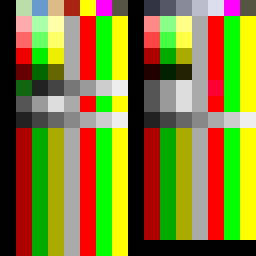

LUNA2 DATABASE · 技術研究
本站為俠客遊 II DOS 版二進制檔案格式的獨立逆向研究。
公開頁面展示「事實層」（檔案格式、加密演算法、struct 結構、價格、HP、攻擊力、名稱、規則等可量化資料）。「創作層」（美術、劇情文字、攻略書 narrative 段落）不在公開頁面展示。
⚖️ 公開政策 v2.0（2026-05-05 修訂；2026-05-12 三邊法律完整對齊）
🇹🇼 著作權法 §9 第 1 項第 3 款（標語及通用之符號、名詞、公式、數表、表格等不得為著作權標的）+ §10-1（保護不及於思想、程序、製程、系統、操作方法、概念、原理、發現）
🇯🇵 著作権法 §2 第 1 項 第 1 號（創作性要件）+ §12-2（資料庫只保護創意性編排，事實 / 單純整理 ≠ 創作）
🇺🇸 17 USC §102(b)（保護不及於構想、程序、過程、系統、操作方法、概念、原理、發現）+ Feist v Rural Telephone (1991) + Sega v Accolade (1992)（為取得互通所需資訊而反組譯，可構成 fair use，個案判斷）
✅ 玩家正常遊玩可見的數值、規則、公式屬事實或操作方法；名稱屬單字或短詞（美國另見 37 CFR §202.1(a)），一般認為不具或僅有極有限的著作權保護（個案判斷）→ 公開
✅ 攻略書編排設計 / 美術 / 劇情 narrative = 創作性表現 → 不公開（僅本機研究保留）
🇹🇼 著作權法 §9 第 1 項第 3 款（標語及通用之符號、名詞、公式、數表、表格等不得為著作權標的）+ §10-1（保護不及於思想、程序、製程、系統、操作方法、概念、原理、發現）
🇯🇵 著作権法 §2 第 1 項 第 1 號（創作性要件）+ §12-2（資料庫只保護創意性編排，事實 / 單純整理 ≠ 創作）
🇺🇸 17 USC §102(b)（保護不及於構想、程序、過程、系統、操作方法、概念、原理、發現）+ Feist v Rural Telephone (1991) + Sega v Accolade (1992)（為取得互通所需資訊而反組譯，可構成 fair use，個案判斷）
✅ 玩家正常遊玩可見的數值、規則、公式屬事實或操作方法；名稱屬單字或短詞（美國另見 37 CFR §202.1(a)），一般認為不具或僅有極有限的著作權保護（個案判斷）→ 公開
✅ 攻略書編排設計 / 美術 / 劇情 narrative = 創作性表現 → 不公開（僅本機研究保留）
▸ ENC 加密：4-byte XOR 演算法（key 為運作時硬編碼常數）
▸ MST/DAT 結構：fixed-record 切片，u8 / u16 / u32 little-endian struct（物品價格為 u32）
▸ 純前端、純 DOM 渲染、無 innerHTML、無框架
▸ MST/DAT 結構：fixed-record 切片，u8 / u16 / u32 little-endian struct（物品價格為 u32）
▸ 純前端、純 DOM 渲染、無 innerHTML、無框架
▸ 全站搜尋
DATA
物 品
456 筆
每筆 25 個數值欄位（價格、裝備位置、體格、命中、攻速、射程、特效、攻擊型式、攻擊力、防砍刺敲、附加魔法、七系上限）。
DATA
怪 物
128 筆
數值欄位（HP / MP / STM / 等級 / 攻擊力 / 防砍刺敲 / 經驗值 / 金錢）。
DATA
魔 法
80 筆
MP 消耗等數值欄位。
DATA
武 技
32 筆
HISSATSU.MST：32 筆 × 36 bytes，已解讀威力、第一 / 第二招旗標、武器類別碼與怪物 ID；招式名稱取自 MGCNAME.ENC 第 80 至 111 號（8 個武器類別碼各兩招，類別對應為推定；另有 16 招怪物專屬必殺技）。
DATA
迷 宮
80 筆
80 筆迷宮名稱（DUNGNAME.ENC 全部記錄）；DUNGDATA.MST 內容全為 0，迷宮資料結構未解讀。
DICT
NPC 名字字典
660 筆
CALLNAME / MCNAME0 / MCNAME1 / FCNAME 4 個 ENC 字典，遊戲生成 NPC 名字的來源池。
DATA
系統詞彙
229 筆
LUNA2.EXE + INSTALL.EXE 內嵌系統字串：8 屬性 / 5 種族 / 11 技能 / 6 boss（雙譯名）/ 1996 安裝介面 / 怪物強度評估等。
▸ PLT 調色盤格式
.PLT 檔案編碼：每色 4 bytes（u16 LE GRB444 + 2 bytes alpha），256 色 palette，PC-98 風格 12-bit RGB 排列（高 4 bits=綠 / 中 4 bits=紅 / 低 4 bits=藍）。
